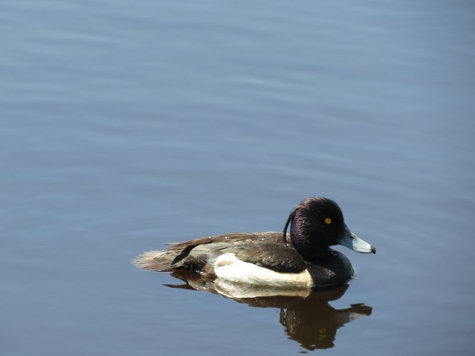

Reiherente
Aythya fuligula
Der reiherartige Schopf am Hinterkopf des Erpels gab dieser Ente den Namen. Sie sucht ihre Nahrung tauchend. Bei diesem Spätbrüter erscheinen die Jungen erst Anfang Juli. Am Riedlehrpfad und noch häufiger an der Ostrach können wir den Entenfamilien begegnen.